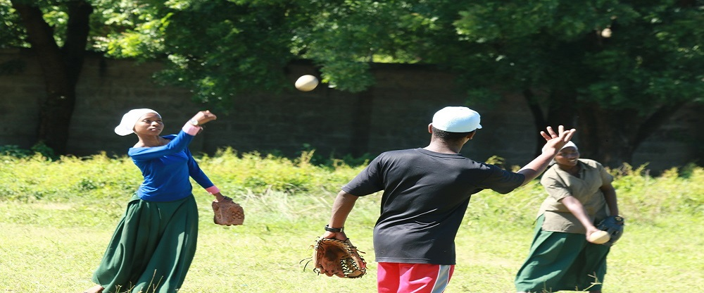

紛争によって「失われた世代」と言われるような、空白の世代が生み出されることが危惧される。様々な社会背景と課題を抱えている子どもたちのために実施されている教育に関わる文献を紹介する。
難民や移民の増加によって、人々は文化や価値観の異なる者同士と共に生きる必要性に迫られている。 本ページの文献では、紛争後の各国が抱える課題解決にスポーツが用いられる事例が紹介されている。

以下にスポーツを通じたジェンダーに関わる文献を紹介する。
紛争によって「失われた世代」と言われるような、空白の世代が生み出されることが危惧される。様々な社会背景と課題を抱えている子どもたちのために実施されている教育に関わる文献を紹介する。
難民や移民の増加によって、人々は文化や価値観の異なる者同士と共に生きる必要性に迫られている。 本ページの文献では、紛争後の各国が抱える課題解決にスポーツが用いられる事例が紹介されている。
多くの難民が、難民キャンプや受入国での避難生活を余儀なくされている。 難民が抱える課題は教育、トラウマ等様々である。本ページでは、それら難民に関わる文献を記載する。
紛争後の経験はのちに世代を超えて人々に伝搬する。 Post Traumatic Stress Disorder（心的外傷後ストレス障害）に対するスポーツを用いた支援活動は盛んに行われており、それらの研究を扱った文献を以下に示す。
著者:岡田真理 (2019).
KADOKAWA
著者:遠山日出也 (2019).
女性学年報
著者:澁谷知美 (2001).
社会学評論
著者:田中俊之 (2019).
現代思想
著者:荒木菜穂 (2019).
女性学年報
著者:ベルフックス (2010).
明石書店
木村涼子・伊田久美子・熊安貴美江 (2013).
ミネルヴァ書房
著者:ウマナーラーヤン (2010).
法政大学出版局
著者:ジュディスバトラー (2019).
青土社
著者:竹村和子 (2018).
青土社
著者:井上俊・菊幸一 (2020).
ミネルヴァ書房
伊藤公雄・牟田和恵 (2015).
世界思想社
著者:日本スポーツ法学会 (2020).
エイデル研究所
著者:多賀太 (2016).
学文社
著者:シェリル・ベルクマン・ドゥルー著、川谷茂樹訳 (2010).
ナカニシヤ出版
著者:E.ダニング (2004).
法政大学出版局
著者:中嶋聡 (2007).
青弓社
著者:中嶋聡 (2020).
晃洋書房
著者:学術の動向編集委員会 (2019).
日本学術協力財団
著者:江原由美子ほか (2019).
ハーベスト社
著者:片岡栄美 (2019).
青弓社
著者:若桑みどり (2003).
ちくま新書
著者:押山美知子 (2018).
アルファベータブックス
著者:田中東子 (2012).
世界思想社
著者:現代思想 2020年3月臨時増刊号 総特集 (2020).
ムック
著者:菊地 夏野 (2019).
大月書店
著者:平田晶子 (2017)
文化人類学
著者:トリンTミンファ (1995)
岩波書店
著者:フランツファノン (1998)
みすず書房
著者:田中由美子 (2016)
新評論
著者:菊池夏野 (2010)
青弓社
著者:学術の動向編集委員会 (2019)
日本学術協力財団
著者:松田太希 (2019)
青弓社
著者:戸田真紀子 (2015)
晃洋書房
著者:白戸圭一 (2019)
筑摩書房
著者:坂本公美子 (2020)
春風社
著者:Martha Saavedra (2018)
Sociology of Sport
著者:Brady Martha (2005)
Women’s Studies Quarterly
著者:Chalabaev, A., Sarrazin, P., Stone, J., and Cury, F. (2008)
Journal of Sport & Exercise Psychologyy
著者:Clark, S.; and Paechter, C. (2007)
Sport, Education & Society
著者:Creak Simon (2014)
Routledge
著者:Creak Simon (2015)
University of Hawaii Press
著者:Pattana Kitiarsa (2005)
Southern East Asia Research
著者:Pattana Kitiarsa (2013)
New Mandala
著者:Elliot Katheleen (2017)
The Holizon
著者:Haider Syed (2016)
Men and Masculinities
著者:Hicker Chris (2008)
Sport, Education & Society
著者:平田晶子 (2017)
文化人類学
著者:井谷聡子 (2016)
スポーツとジェンダー研究
著者:坂なつこ (2017)
一橋大学スポーツ研究
著者:田中研之輔 (2016)
スポーツ社会学研究
著者:山口理恵子 (2010)
スポーツ社会学研究
著者:服藤早苗・三成美保 (2011)
Women’s Studies Quarterly
著者:日本スポーツとジェンダー学会データブック編集委員会 (2010)
Women’s Studies Quarterly
著者:日本スポーツ社会学会 (1998)
Women’s Studies Quarterly
著者:エリアスノベルト・ダニングエリック (1995)
Women’s Studies Quarterly
著者:井上俊・伊藤公雄 (2010)
Women’s Studies Quarterly
著者:伊藤公雄 (1996)
Women’s Studies Quarterly
著者:アンホール (2001)
Women’s Studies Quarterly
著者:掛水通子 (2019)
Women’s Studies Quarterly
著者:ヴォルフガング・ベーリンガー (2019)
Women’s Studies Quarterly
著者:松村和則ほか (2020)
Women’s Studies Quarterly
著者:高井昌吏 (2005)
Women’s Studies Quarterly
著者:畠山幸子 (2000)
Women’s Studies Quarterly
著者:岩崎夏海 (2009)
Women’s Studies Quarterly
青柳建隆、岡部佑介 (2019)
Women’s Studies Quarterly
著者:Bell, Carl, C. (1997).
Journal of the National Medical Association
https://www.ncbi.nlm.nih.gov/pmc/articles/PMC2568112/pdf/jnma00163-0027.pdf
著者:EdgeworkConsulting, (2013).
http://www.edgeworkconsulting.com
著者:Gschwend, A. & Usha, S. (2008).
Swiss Academy for development
https://www.sportanddev.org/sites/default/files/downloads/49__psycho_social_sport_programmes_to_overcome_trauma_in_post_disaster_
interventions_.pdf
著者:Henley, R.(2005)
Swiss Academy for Development Report, Swiss Academy for Development
http://assets.sportanddev.org/downloads/58__helping_children_overcome_disaster_trauma_through_post_emergency_
psychosocial_spo.pdf
著者:International Platform on Sport & Development (2009).
http://assets.sportanddev.org/downloads/090611_sport_and_peacebuilding_profile_for_print.pdf#search=
'Thematic+profile+sport+and+peacebuilding'
著者:Kunz, V. (2006).
Swiss Academy for Development
http://assets.sportanddev.org.sad.vm.iway.ch/downloads/29__sport_and_play_for_traumatized_children_and_youth_an_
assessment_of_a_pilot_projec.pdf
著者:Lea-Howarth, J. (2006).
University of Sussex
http://assets.sportanddev.org/downloads/42__sport_and_conflict_reconciliation___ma_dissertation.pdf
著者:Ley, C. & Rato, B. et al. (2011).
A International Journal for Theory, research and Practice
http://www.tandfonline.com/doi/abs/10.1080/17432979.2010.546619?needAccess=true
著者:Meuwly, M. & Jean, H. (2008)
Rep. Terre Des Hommes
http://assets.sportanddev.org/downloads/1__laugh__run_and_move_to_develop_together__games_with_a_psychosocial_aim.pdf
著者:Rinjen, B. (2005).
W.J. H Mulier Institut